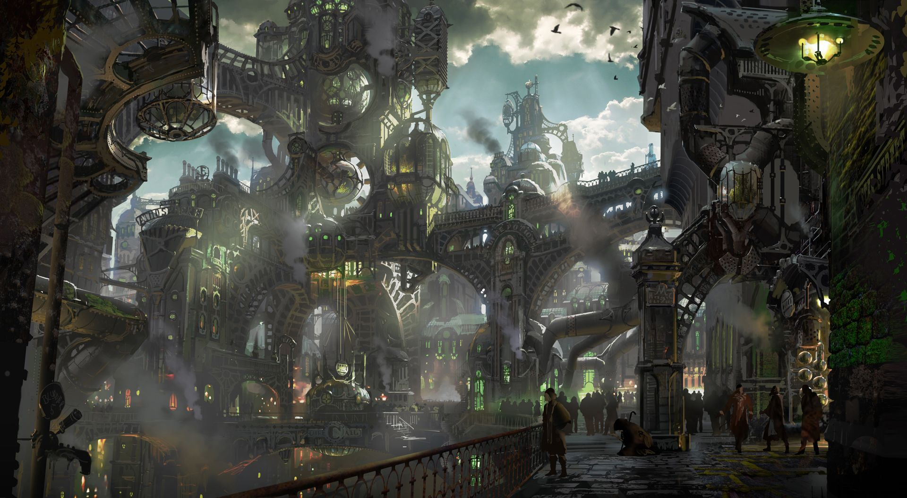
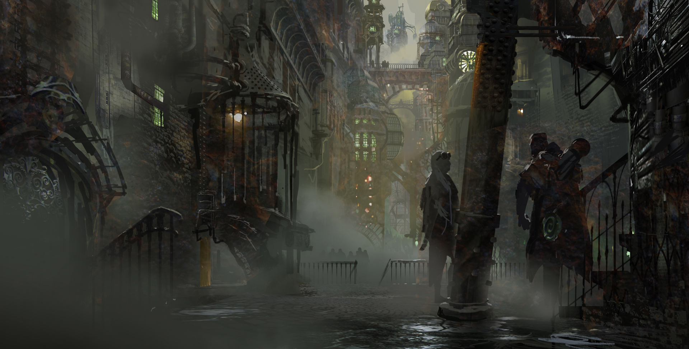
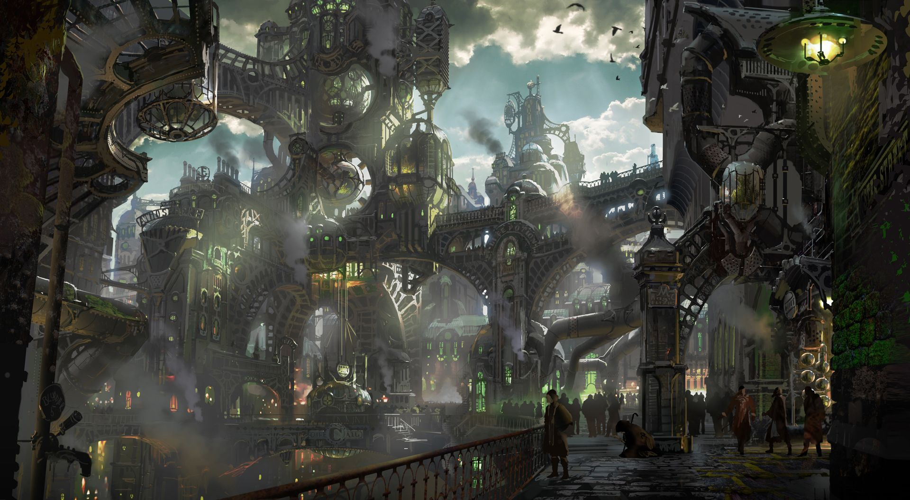
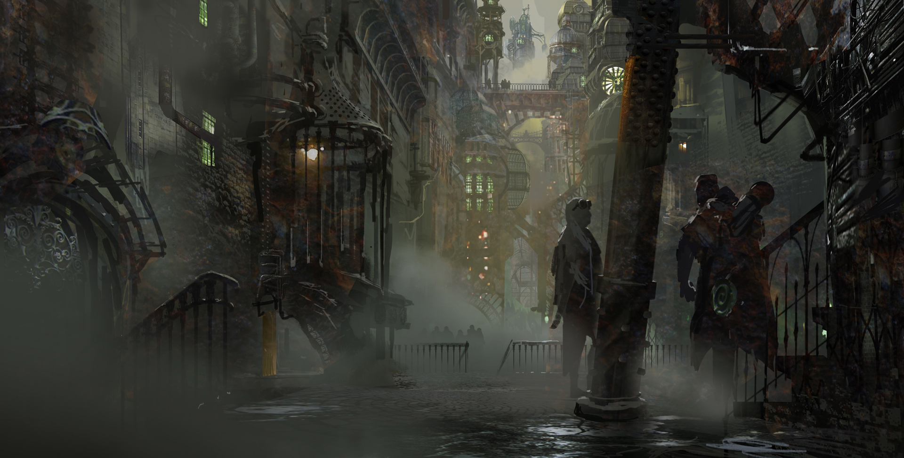

Jinx
ZAUN
Zaun é um grande distrito subterrâneo, aos pés de cânions profundos e vales que cortam Piltover. A pouca luz que chega lá é filtrada pelas fumaças que saem dos emaranhados de canos corroídos e refletem do vidro manchado de sua arquitetura industrial. Zaun e Piltover já foram unidas, mas agora são sociedades simbióticas, mas separadas. Apesar de existir no crepúsculo perpétuo da poluição, Zaun prospera com seu povo vibrante e sua rica cultura. A riqueza de Piltover permitiu que Zaun se desenvolvesse em paralelo; um espelho escuro da cidade acima. Muitas das mercadorias que chegam a Piltover acabam entrando no mercado clandestino de Zaun, e os inventores hextec que consideram que as restrições impostas na cidade acima são muito rígidas descobrem que suas pesquisas perigosas são bem-vindas em Zaun. O desenvolvimento desenfreado de tecnologias voláteis e da indústria imprudente fez com que as extensões de Zaun ficassem poluídas e perigosas. Correntes de derramamento tóxico estagnaram nas partes mais baixas da cidade, mas mesmo aqui as pessoas encontram maneiras de existir e prosperar.

 


